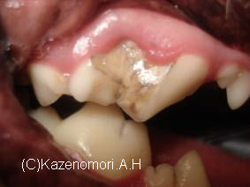
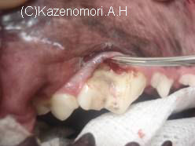
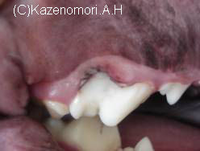

2009年 7月 破折歯
2009年 7月 破折歯
ヒトでぶつけたなどの外傷により、歯が欠けることがありますよね。
大変丈夫に見え、好んで固いものを食べている犬や猫でも、『歯が欠ける』ことがあります。



上の写真の患者さんは、ゴールデンレトリバーですが、やはり、歯が欠けているとのことで来院されました。 上顎の第４前臼歯です。表面が欠けてしまい、歯石が付いたために茶色に変色したように見えます。
左の写真は、歯石などの汚れを取ったところです。比較的大きく欠けていましたが、レントゲン検査の結果歯周組織の痛みは少ないと判断しましたので、レジン（充てん物）を使い、修復しました。右写真が修復後です。
けんかや金属などの固いものを咬み、歯が折れた時、
犬や猫が自分で気が付いて、
「う～！歯が折れた！！痛いかも？？」
と言って、病院に来ることは残念ながら、ありませんよね。
そこで、気がつかれた飼い主さんが連れていらっしゃいます。折れた直後は、極少量の出血がありますが、すぐに止まってしまいますので、来院された時は、ずいぶん経過が経ってしまっていることが多いようです。
さて、折れてしまった歯（破折歯）。どうしましょう！
治しましょう！
ペットは、歯が折れただけで食べ物を食べれなくなるわけではないのですが、放置しておくと、折れた歯の歯髄から細菌が侵入し、感染を起こし、周りの組織が痛んでしまいます。もちろん痛みが出てきますので、ペットは苦しむことになってしまいます。
破折歯を見つけた時は、早めに病院にかかりましょう！